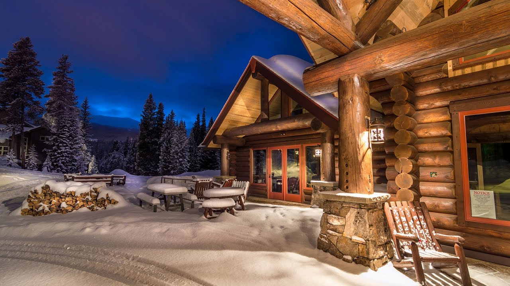

Oke Oka Lokam Female Cover | Sashi | Sid Sriram | Chandra Bose | Monica Velamuri
Monica Velamuri
401 subscribers
Hello Viewers,
After a very long time, here's a song for you to listen to and enjoy. This one is from the movie Sashi composed by Arun Chiluveru. If you like it, do not forget to share it with your friends.
Credits
Song: Oke Oka Lokam
Singer: Monica Velamuri
Video & Editing: Sowrabh N R S
Original Song credits
Movie: Sashi
Singer: Sid Sriram
Music: Arun Chiluveru
Lyrics: Chandra Bose
Cast: Aadi
show more

17:30
Night Photography: Finding your way in the dark
7th Era
792K views
.jpg) 11:30
11:30
Night PHOTOGRAPHY
Peter McKinnon
2.7M views
.jpg) 8:30
8:30
Night Street Photography
Pierre T. Lambert
183K views
.jpg) 4:23
4:23
Long Exposure PHOTOGRAPHY(NIGHT TIME
Hayden Pedersen
549K views
.jpg) 11:43
11:43
NEON PHOTOGRAPHY with BRANDON WOELFEL
Peter McKinnon
873K views
.jpg) 21:01
21:01
An Introduction To Macro Photography
neil fisher
150K views
.jpg) 3:21
3:21
How To Take Photos at Night | Brandon Woelfel
Brandon Woelfel
350K views
.jpg) 7:00
7:00
ADVENTUROUS NIGHT PHOTOGRAPHY Gavin Hoey
7th Era
3.8K views
.jpg) 10:00
10:00
Night Photography - without Flash
Weekly Imogen
1M views
.jpg) 2:44
2:44
How to shoot Night Portraits at Home
gabpolitely
139K views
.jpg) 3:21
3:21
How To Take Photos at Night | Brandon Woelfel
Brandon Woelfel
350K views
.jpg) 4:23
4:23
Long Exposure PHOTOGRAPHY(NIGHT TIME
Hayden Pedersen
549K views
.jpg) 11:43
11:43
NEON PHOTOGRAPHY with BRANDON WOELFEL
Peter McKinnon
873K views
.jpg) 1:43
1:43
Dediction
Ryan Reynolds
39K views
.jpg) 2343
2343
My Video Went Viral. Here's Why
Veritasium
2.1M views
087 N K Chaitanya3 weeks ago
Extraordinary singing 👌👌👌 Awesome..... Euphonious